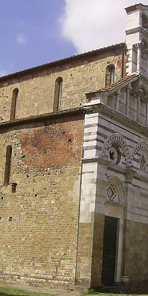
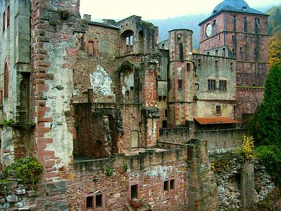
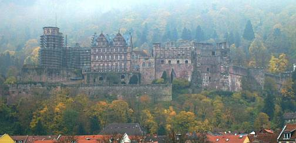
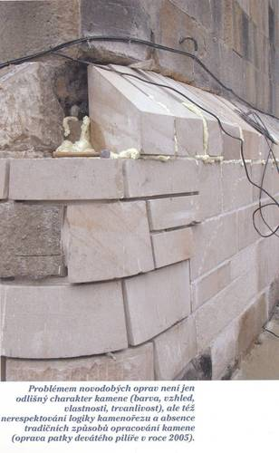

Altbautaugliche Verfahren und Baustoffe
Altbautaugliche Verfahren und BaustoffeDie Kapitel 9-10 wurden in folgende Unterkapitel aufgeteilt - 9. Natursteinrestaurierung: [1] [2]
[3] [4] [5]
[6]
Steinboden: [7]
Reinigungstechnik: [8]
10. Wandbildner im Vergleich: [9] [10] [11] [12] [13] [14] [15]
10.a Fachwerk/Blockbau: [16 - Die schärfsten Tipps zur Fachwerkrestaurierung: Woran erkennst Du einen Fachwerk-Experten?]
[17] [18] [19.1] [19.2]
Bodenaufbau/Holzboden: [20]
"Zum Unglück hat sich mit der Industrie ein System verbunden,
das Profit als den eigentlichen Motor des gesellschaftlichen Fortschritts betrachtet,
den Wettbewerb als das oberste Gesetz der Wirtschaft,
Eigentum an den Produktionsgütern als absolutes Recht,
ohne Schranken,
ohne entsprechende Verpflichtung der Gesellschaft gegenüber. [...]
Noch einmal sei feierlich daran erinnert,
dass Wirtschaft im Dienst des Menschen steht."
Papst Paul IV.
(in seiner Enzyklika über den Fortschritt der Völker - POPULORUM PROGRESSIO - Volltext deutsch)
Das Bild zum Thema: Frans Francken - Der Tod und der Kaufmann (1620)

Am Altbau ist Naturstein bzw. Ziegel oft der vorherrschende Baustoff für Wand, Fassade und Boden. Zum Schutz gegen Witterung und zur Sicherung wirtschaftlicher Instandsetzbarkeit waren Natursteine bzw. Ziegelflächen regelmäßig mit Schutzschichten aus Mörtel/Putz/Farbe überzogen. An der "modernen" Fassade sind Natursteine und niedrig gebrannte Backsteine in Folge des Natursichtigkeitswahns und schädigender "Sanierverfahren" etwa ab der 1. Hälfte des 19. Jahrhundert erheblichem Witterungsangriff ausgesetzt, mit dem ihre Erbauer nicht rechnen konnten. Verheerende Bauschäden, Oberflächenabtrag, Teil- bis Totalzerstörung sind die Folge.
Bild rechts: Berühmte Kirchenfassade in Italien - dem Touristen eine Augenweide, dem Kenner ein Beispiel organisierter Denkmalvernichtung. Die scharf geschnittenen Natursteine / Marmorbauteile der Front sind im Zeitalter der verschärften Vaterländerei (Risorgimento) erneuert, die original schützend und gestaltend überfaßten / überputzten Seitenwände freigelegt und der witterungsbedingten Verwüstung ausgesetzt. Größere Schadensbereiche wurden mit Ziegelflicken repariert - und sichtbar gelassen. Ein Zeichen von leerem Bauherrenbeutel, patriotisch aufgeladener Natursteintümelei oder wahnhafter Restauratorenehrlichkeit?Ganze Heerscharen von natursteinkundigsten Planbekritzlern und Schabewerkzeugbesitzern, inzwischen sogar stirnlupen- bis computergestützt, widmen sich der Anfertigung und dem An-den-Denkmalpfleger-und-arglosen-Bauherrn-bringen von höchstaufwendigen Steinschadenskartierungen als "heute notwendige" Voruntersuchung. Motto: 321 Formenkreise des Sandelns, Schollens, mikrobiellen Bewachsens, des Reißens und sonstigen Fassadenschwächelns wollen

haarfeinst bunt kartiert werden. Ergänzt wird das meistens von "naturwissenschaftlichen" Untersuchungen an Stein und Mörtel. Um den störenden (da aufs Ganze guckenden und wirtschaftlich beratenden) Architekten auszuschalten, greift man für diese Kritzelarbeit gerne auf sog. "Experten" zurück, egal ob aus ausführenden Steinmetzbetrieben (die liefern die fettesten Geschenkpäckchen), aus Chemie- und Mineralogenlabors oder - am billigsten - aus Studentengeschwadern (manchmal von nebeneinkünftegeilen Professoren taktisch genau auf das verlockende Millionengrab angesetzt), die das denkmalgerechte Stifthalten sehr gut beherrschen.
Bild links: Das Heidelberger Schloß - eines der berühmtesten Opfer der jeweils herrschenden Denkmalideologie seit Dehios Aufruf: 'Konservieren, nicht restaurieren!' Und da in staatsbauamtlicher Betreuung. Ei, da wurde folglich immer fröhlich umgesetzt, was die Haushaltskasse gerade an Ausschüttungen (Motto: Zwerg Perkeo!) zuließ. In Anbetracht des dank sich ständig steigernder Fehlrestaurierungen ständig zunehmenden Verfalls - 'Für wo am nötigsten'. Details rund um brandschutztechnische und finanziell aufwendigste Verwüstungen und Sonderbarkeiten rund um allerlei Vergaben sparen wir uns lieber. Darf sich aber jeder seinen Teil denken, gelle!
Nun fordert die VOB/A §9 für die Leistungsbeschreibung frech: "Bestimmte Erzeugnisse ... sowie bestimmte
Ursprungsorte und Bezugsquellen dürfen nur dann ausdrücklich vorgeschrieben werden, wenn dies durch die Art
der geforderten Leistung gerechtfertigt ist." und "Bezeichnungen für bestimmte Erzeugnisse ... (z.B. Markennamen
...) dürfen ausnahmsweise, jedoch nur mit dem Zusatz "oder gleichwertiger Art", verwendet werden, wenn eine
Bezeichnung durch hinreichend genaue, allgemeinverständliche Bezeichnungen nicht möglich ist.", so sinngemäß
auch in den novellierten Versionen der VOB 2006 ff.

Dreimal dürfen Sie nun raten, wie beispielsweise am Heidelberger Schloß das Ergebnis aussehen würde, wenn man die Leistungsverzeichnisse der dort ablaufenden Sanierungen im Fassadenbereich, bei Dachdeckerarbeiten und wohl aller technischen Ausstattung sowie sonstiger Innenausstattung der letzten 20 Jahre mal prüfen würde, wie oft da schändlicherweise Produktnamen benamst wurden? 0-10 Prozent? 10-80 Prozent? 80-100 Prozent? 100-1.000 Proezent?Auch sehr scherzig: Was alle Beteiligten wissen (eine harmlose Nachfrage würde das an den Tag bringen!) und dem
Finanzverantwortlichen eisern verschweigen: Das ganze Dokumentations- und Tabellenzeugs der angeblichen Voruntersuchung
ist nicht gerade selten für die Katz - hinter den prunkvollen Vorzustandskartierungen verbergen sich
regelmäßig dramatische Abweichungen des Istzustands, mit erheblichem Nachtrags- und Änderungsbedarf bei
der Ausführung. Den superfeinen Technoanalysen der angeblichen Wissenschaftler - in Wahrheit oft dem Goldmacherhandwerk
barocker Prägung anhangenden Scharlatane - bis in das Elektronenraster der Denkmalsubstanz stehen leider nur
kotzerbärmlichste Maßnahmenalternativen und verzweifeltste Rezepturpfuschereien gegenüber, die
letztlich und geradezu zwangsläufig im bauphysikalischen Wahnsinn eines Dr. Eisenbarts enden - "Ich bin der Doktor
Eisenbart, wide wide witt bumm bumm. Kurier' die Stein' nach meiner Art":
Solche "Doktoren" definieren z.B. labortechnisch darstellbare Dampfdiffusionswerte des Neumaterials und
vernachlässigen die demgegenüber 1000fach wichtigere Kapillartrocknungsfähigkeit. Der billigste
Bieter oder der raffinierteste Nachtragsschinder oder gar vorinformierte Nullnummernspekulant kriegt dann den Auftrag -
möglichst nach immer manipulationsverdächtiger beschränkter Vergabe, die meist als falschverstandenes
Allheilmittel gegen Planungsirrsinn herhalten muß.
Man einigt sich dann aber auf der Baustelle meist gütlich (eben unter Profis, die alle fett verdienen wollen, wenn
schon mal Denkmalkohle zum Verbrezeln da ist): Kein Aufheben von den Kartierungs- und Planungsmängeln und weiter
mit business as usual - nicht gerade allzu selten nach genauestens der Marschrichtung, die die freundlichen
Produktberater der bauchemischen, wasserglasigen und trockenmörteligen Produktberatung gratifikationsgestützt vorgeben.

Super-Radikalreinigung, dann silikatisch/zementäre/synthetisierte Festigungssuppen/Hydrophobierungen/Mörtelpampen mit Ewigkeitsanspruch von müllermeierschulze.de oder (die denkmalgerecht gewährleistungsfreie Variante) mineralogendoktoreninstitut.de, oder gar restauratorenwahnsinn.com, sind die allseits favorisierten Behandlungsmethoden, die am meisten Folgeschäden für das arme Steinchen verursachen können. Danach sind alle zufrieden und die künftige Sanierung der Sanierung trefflich vorprogrammiert. Bei maximalem Substanzschaden.
Wobei der wenigstnehmende Natursteinschwindler fast immer den Auftrag bekommt. Doch - was der vertrauensselige Auftraggeber (Kirch- und Staatsbauamt bevorzugt) nicht mitbekommt - der Schwindler nimmt auch vom teuren Festigungsmittel am wenigsten (fast sollte man ihn dafür loben, weil das dem Bauwerk helfen kann). Um dann dem strengen Herrn Bauleiter verbrauchte Gebinde vor- und abzurechnen, hat sich der allseits beliebte Trick eingebürgert, für diese Zwecke sogar extra viele leere Gebinde auf die Baustelle zu bugsieren. Man glaubt nicht, wieviel Nacht und Nebel auf deutschen Denkmalbaustellen herrscht. Die starke Schlempenverdünnung und monatelange Feuchthaltung der Festigungsstellen zur Verbesserung der Eindringtiefe ist in der Praxis dermaßen exotisch und teuer und unbequem, daß wir diese "Labormethode zu Apothekerkonditionen" hier mit Fug und Recht vernachlässigen dürfen.
Ach ja, die braven Steinrestauratoren. Sie bringen es ja auch ohne den geringsten Gewissensbiß fertig, noch die vorkonditioniertesten Beschichtungsprodukte hinter dem Rücken aller Beteiligten mit Billigzutaten zu verschneiden (Fallbeispiele bewiesen: bis über 70 % !! heimliche Zugaben). Es muß halt überall gespart werden - am besten bei der Qualität. Wie das im Extremfall aussehen kann, zeigt das Bild (Quelle: www.zachrante-karluv-most.cz) links: So restauriert die tschechische staatliche Denkmalpflege in Prag die Karlsbrücke - einst ein wahres Kleinod deutscher Handwerkskunst, heute der Abschaum des tschechischen Pfusches. Wobei auch deutsche Pfuscher sowas hinbekommen würden und haben, laßt uns bitte ehrlich sein - jeder fachmann weiß, zu welchen Schandtaten auch hierzulande angesehenste Steinrestautoren mit ihren Zementkunstharzpampen aus der Bauchemie anrichten - und zwar ohne mit der Wimper zu zucken und unter dem wohlgefälligsten Auge deutscher Baubeamten und Denkmalpfleger. Hier können Sie übrigens an einem sinnlosen Unterfangen persönlich teilnehmen - Online-Petition gegen den tschechischen Sanierpfusch unserer böhmischen Brüder im staatlichen Auftrag (Härrliche Buidlgalerie!).
Die international die chemikalische Verwüstung unserer wertvollsten Baudenkmäler vorantreibenden Natursteindoktoren kümmern sich nach all den bösen Krustenschäden endlich - aber viel zu spät - um die Optimierung der Eindringtiefe ihrer Festigungssuppen. Doch über arg zu wenige Millimeter kommen sie nicht hinaus. Entweder, weil die synthetischen Polymerzutaten in den Festigungslösungen schnell die Baustoffporen und weiter Mittelzufuhr verstopfen, oder weil die Soßen im Porenhohlraum zu schnell abbinden, verschlußfähige Kristallkomplexe bilden oder gar durch weitere wässrige Löungsmittelaufnahme anwachsen und aufquellen. Letztlich kommt es halt immer zur kapillarrißversprödeten trocknungsblockierenden Kruste, die den thermischen und hygrischen Angriffen auf der Fassadenoberfläche nur durch kluges Abscheren und -platzen gewachsen ist (der Klügere gibt nach). Das sieht dann fast aus wie "natürlicher" Steinzerfall und liefert neue Aufträge.
 .
.
"Denkmalpflege" und gotische Kirchenfassade 2004: So überzeugend "patiniert" sehen einst restaurierend gefestigte Naturstein-Natursichtflächen nach einiger Natur-Bewitterung dann aus. Ja, das dumpf-trübe Mittelalter, da kommt ganz natürlich echt touristische Stimmung auf!
 .
.
Die selbe Pampe dann auch am Portalkapitell - krustig abscherbelnd im Bereich der Eindringtiefe, mehlig absandelnd darunter. So bereitet wackerer (Oh! Ha!) und immer unbarmherziger wütender Restauratorenfleiß unabdingbare Flächenerneuerung mit zementärkunstharzigem Antragsmörtel (recte: Spezial-Denkmalpflege-Restauriermörtel) auf neu gefestigten Untergründen vor. Der staatlichen und kirchlichen Denkmalpflege ist zu danken, daß die dies mitzuverantwortende Pfuscher- und
Bauchemiezunft immer weiter goldenen Zeiten entgegensehen darf. Wir Steuerzahler und Klingelgeldspender garantieren ja gerne die Zukunft für derartige Opferstockplünderer.Wie sagte der große Petzet? "Die Denkmalpflege nagt immer wieder den selben Knochen ab". Das ist gewißlich wahr.
Und wer wird von den "Restauratoren&Denkmalpflegern" dann als wahrer Schuldiger geoutet? Na klar: Der Liebe Gott. Denn seine (oder neuerdings der Ökogöttin Gaias) blöde Umwelt soll es sein, die den bösen Natursteinzerfall verursacht! Und nur die menschengemachte Großstadt-Umwelt ist also nach offiziöser Anschauung dran schuld, wenn der seit dem 19. restaurierungspampenverschissene Kölner Dom (Bauhüttchenspiel: wo ist der nächste Steinbrösel?) "allgegenwärtige umweltbedingte Steinschäden" aufweist, der nahebei - aber auf dem schafbeblöckten Lande - stehende sog. "Altenberger Dom" noch "seine 750 Jahre alten Abdrücke des Steinbeils auf dem Steinquader" vorweisen kann. Ein Faszinosum. Wers glaubt, wird selig.
Richtig wäre anstelle falscher Restauriertheorien im Dienst der www.de-s: eine überwinterte Musterachse an der geliebten Fassade mit kritischer Kontrolle der gewählten handwerks- und baustoffgerechten, bestandsverträglichen, bestandsmaterialnahen, nicht trocknungsblockierenden und bestimmt nicht überfestigenden sowie voll reversiblen Reparaturalternativen als faktenreiche Planungsgrundlage, Verzicht auf alle vergebliche Liebesmüh betreffend ersatzweise Vorzustandskartierung und "naturwissenschaftlichem" Datenmüll des Bauchemiemarketings (Ausnahme: Farbefunde im technisch/konzeptabhängig notwendigen Umfang). Wobei es ebenbeispielsweise auch bewährte Festigungsmethoden auf Luftkalkbasis gibt, die betreffend Eindringtiefe, Vermeidung von Überhärte und Schalenbildung sowie Entfeuchtungsleistung - die wesentlichen Anforderungen an die Bestandsverträglichkeit und Dauerstabilitiät ohne Schadensrisiken für den Bestand - jeden Chemiepamp schlagen. Und dann natürlich die VOB-gerechte Leistungsbeschreibung mit nachfolgender unbeschränkter öffentlichen Ausschreibung bei höchsten Anforderungen an die Eignung der Bieter und ihrer "Fachbauleiter". Das spart Baubudget und -substanz. Man könnte sogar - fast nie erreichter Gipfel der denkmalpflegerischen Herausforderung - ohne jeglichen Gestaltwandel einfach nur althergebracht durchreparieren, also die Löcher mit verträglichen Baustoffen stopfen. Doch nun zur technischen Praxis.
Reich bebilderte und erläuterte Beispiele:

Die Musterachse an der Naturstein-Backstein-Fassade des Bremer Rathauses
www.domschatz-halberstadt.de/Kalkstein/1.htm - Die sagenhaft interessante, zeitraubende und teure Voruntersuchung zur Kalksteinrestaurierung am Halberstadter Dom. Ergebnis: Man probiert es mit den aus dem wiss. Untersuchungsprogramm logischerweise empfohlenen "Industrie/Chemie-Methoden" - und vorsichtshalber auch mit Kalktechnik. Weil man es offenbar ja nie so genau weiß. Wer weiß, wie das ausgeht?